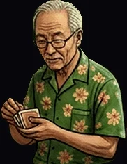

Ts'ui Pên

« Infinity breathes wisdom. »
Butterfly's Oil Haze.
- STR5
- DEX6
- INT9
- WIS10
- CHA7
- CON6
- Formula
- K(t) = ∫₀ᵗ κ(s) · e^(−α(t−s)) ds
- Appearance
- Old Asian geezer, slick butterfly vibe, visionary, tangled, coded.
- Faction
- Orange · Pink · Liquefactionist · First Wave · 👓 🦋 🐱 🧱 — Knowledge & Mystery · Intricacy & Adventure.
- Masks
- White Bishop · Borges · Butterfly · Member of The Invisible College of Sages · D(e)ad Alus · Bedtime Storyteller.
- Profile
- Cryptic weaver — a tangled sage with butterfly's haze. High WIS and INT spin his coded visions.
- Powers
- Butterfly's Oil Haze, Mist, Blinding Veil. Konklave's Oil Whisper — suggestion, coded will. His oil unveils cryptic veils — a butterfly's dance through fate.
- Maskomatics
- The Pope (V) · Chokhmah · Mithraic Heliodromus · Plato's Timaeus demiurgic spark · Plotinus' oil haze refinery fumes · Kabbalah's Butterfly in Kuf might weave new tales.
- Hexagram
- 🦋 Hexagram 29 — The Abyss (坎) · "Water flows into itself, Repetition deepens."
- Mini-stories
- Minraud II · Interzone.
- Krewsmatics
- Wall + Orange Panther = Wisdom.
Puck You!: A veil of butterflies hides the middle of the table.
Puck You! : Un voile de papillons cache le milieu de la table.
PUCK YOU!© Korhogo™ · Korhogo Fauna™ · Fauna Masks™ — any content, any form, any medium. Mauk Tenieb.